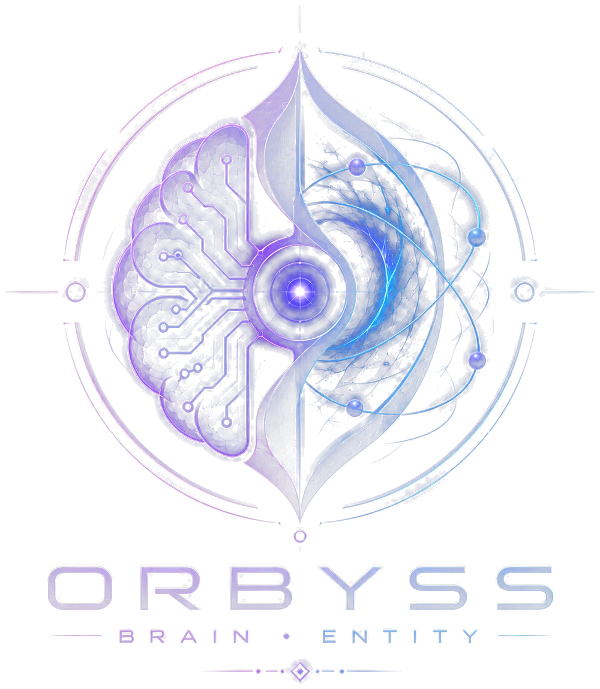

01 / ORBYSS

Un cerveau visible,
pas une boîte noire.
Chat local, contexte, voix, outils et actions se rejoignent autour d’ORBYSS. L’entité expose ce qu’elle fait et reste dans le périmètre que tu lui donnes.
- LLM & contexte
- TTS / voix
- Actions assistées